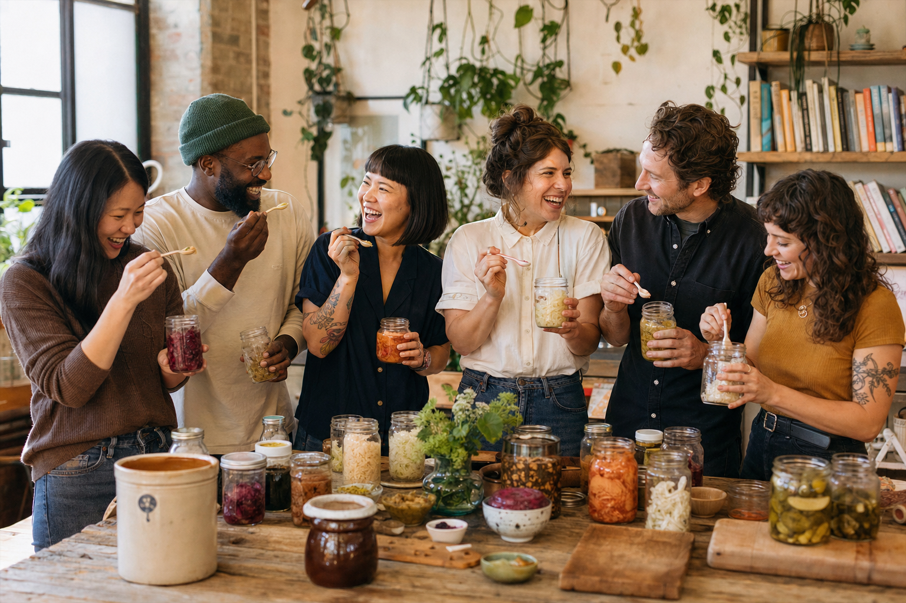

Issue No. 1
Stapled, photocopied, distributed at three Brooklyn food co-ops. 240 copies. Topic: sauerkraut.
A magazine and an archive, devoted to the strange, ancient, and stubbornly delicious craft of fermentation.
The Pickle Periodical was started in 2016 by three home fermenters who realized that the most exciting cookbooks they owned were paperbacks from the 1970s and the most exciting people they knew were elderly grandmothers in basements. There was a magazine missing from the world — one that took brine seriously without taking itself too seriously, one that documented techniques alongside the people who carried them across continents.
So we made it. Quarterly, in print and online, with a worker-owned co-op and zero outside investment. Every recipe in the vault has been tested at least twice in the same kitchen by the same set of obsessed eaters.
We believe in three things: that time is the most overlooked ingredient on earth, that microbes are collaborators rather than enemies, and that traditional knowledge deserves more shelf space than the latest grocery-aisle trend. We pay our writers above industry rates and credit every recipe to the person or family who taught us.
If you find a typo, an error, or a story we should be telling, write to us. We are small, we are listening, and we are usually hunched over a jar.

“If you can fail at sauerkraut, please write me. I want to understand.”
“The crock is the first cookbook anyone ever owned.”
“Smelly food is just food that’s confident.”
“Capsaicin is a hug from the universe.”
“I would trade my PhD for a perfect kimchi.”
“Every village has a ferment. Most have a recipe. Few have written it down.”
Stapled, photocopied, distributed at three Brooklyn food co-ops. 240 copies. Topic: sauerkraut.
Six contributors pool savings to formally found a worker-owned publication. First paid issue ships.
What begins as a single column becomes the magazine’s most-read feature, with reader letters from 38 countries.
Launched as a print insert; expanded into an ongoing digital archive of global pickling traditions.
We start selling jars, crocks, salt, and books from a tiny Brooklyn storefront on Greene Avenue.
Eight years on. Forty-seven issues. One Sauerkraut Census. Tens of thousands of jars.
Editorial: letters@picklepub.co
Pitches: pitches@picklepub.co
Shop / Orders: shop@picklepub.co
We accept pitches year-round. The bar is high; the response time is reasonable. Send a 200-word pitch with two reference recipes or articles you’ve written. Rates start at $0.40/word and rise with photography and recipe-development work. We pay on acceptance, not publication.
We pay $250 for documented family recipes that we publish in the Atlas, plus full credit and a complimentary year subscription. Use the form on the Ferment Atlas page.
312 Greene Avenue, Brooklyn NY 11238. Wed–Sun, 11am–6pm. Closed Mondays & Tuesdays. We host monthly tasting nights — see Community for the calendar.
312 Greene Ave · Brooklyn NY 11238
Wed–Sun · 11am–6pm